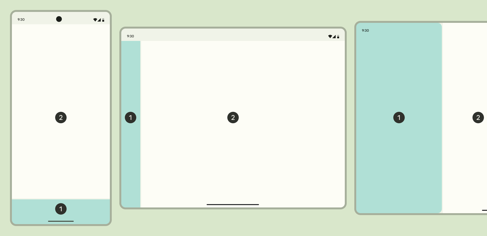
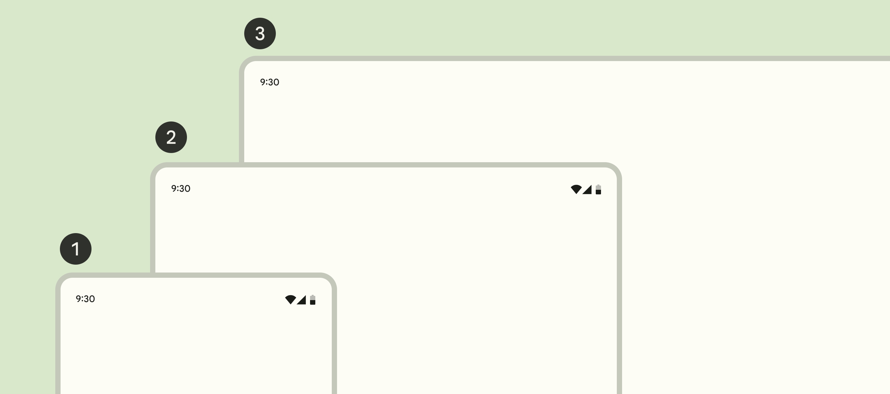

质感设计-基础-布局
Table of Contents
1. 布局
布局（Layout）是屏幕上视觉元素的排列。布局可以引导用户聚焦想要执行的动作。为了提供一致的体验，布局应当考虑适配紧凑、适中、宽大等多类窗口尺寸。
1.1. 布局属性

Figure 1: 布局术语
- 列（Column）。面板中一个或多个垂直的块。
- 折叠区（Fold）。可折叠设备或双屏设备上将两个显示区域分隔开的可折叠部分。
- 外边距（Margin）。屏幕边缘和可视元素之间的距离。
- 面板（Pane）。包含其他组件或元素的布局容器。
- 间隔（Spacer）。两个面板之间的空间。
1.2. 布局工具
布局常用的工具有：
- 分组（Grouping）将共享相同上下文的元素联系在一起。
- 显著分组（Explicit grouping）使用诸如边框（outline）、分隔符（divider）或阴影（shadow）等边界将元素包围起来。比如卡片是显著分组。
- 隐含分组（Implicit grouping）将临近元素关联起来。元素之间没有线或阴影，而是使用开放空间分隔。比如轮播（Carousel）是隐含分组。
- 外边距（Margin）是窗口边缘和元素之间的距离。
- 间隔（Spacer）是两个面板之间的空间，宽度24dp。
- 内边距（Padding）是两个元素之间的距离，分为垂直内边距和水平内边距。内边距是4dp的整数倍。
- 像素密度（Pixel density）是屏幕上每英尺长度内的像素数。
- 密度无关像素（Density-independent pixel）是在像素密度为160的屏幕上的物理像素。
- 信息密度（Information density）受到布局的空间维度（外边距、内边距、间隔宽度等）的影响。高信息密度有助于客户快速浏览或对比信息。提高信息密度可以让列表、表格和长表单在屏幕上显示更多的内容。但信息密度过高可能导致交互元素过小，引发误操作。
1.3. 布局区域
1.3.1. 导航区域

Figure 2: 两区域布局
大部分布局分为导航区域和内容区域。导航区域帮助用户在各目标页面之间跳转。导航区域常用的组件有导航抽屉（Navigation drawer）、导航导轨（Navigation rail）或导航栏（Navigation bar）。

Figure 3: 三种导航组件
1.4. 内容区域
内容区域（Body region）是展示应用主要内容的区域。这些内容包括：图片、文字、列表、卡片、按钮、应用栏、搜索栏等。内容区域通常被划分为一个或多个面板。面板是内容区域中一组相关的内容。根据面板尺寸的约束，面板可以分为固定尺寸（Fixed）或自适应（Flexible）的。布局区域和面板的尺寸和相对位置应当由设备窗口尺寸的类型决定。
- 紧凑窗口
- 1个面板。
- 适中窗口
- 1个或2个面板。
- 宽大窗口
- 2个或1个面板。
面板是包含应用的框架，这一点和窗口不同。多窗口视图是系统界面的特性，用来同时显示多个应用。单一面板布局通常使用自适应尺寸。两面板布局通常使用一个固定尺寸面板和一个自适应尺寸面板，或者使用两个尺寸对称的自适应尺寸面板。面板可以包含一个顶部应用栏（Top app bar）和一个底部应用栏（Bottom app bar）。应用栏中动作按钮应当在紧凑窗口中折叠显示，在宽大窗口中展开显示。
1.5. 窗口尺寸分类

Figure 4: 窗口尺寸分类
| 窗口尺寸分类 | 宽度（dp） | 示例 |
|---|---|---|
| 紧凑（Compact） | < 600 | 手机（竖屏） |
| 适中（Medium） | 600 - 840 | 平板电脑（竖屏）、可折叠手机（竖屏展开） |
| 宽大（Expanded） | > 840 | 手机（横屏）、平板电脑（横屏）、可折叠手机（横屏展开）、电脑 |
产品应当为三种不同窗口尺寸分类设计不同的布局。
| 窗口尺寸分类 | 面板数量 | 导航 | 信息控件 | 动作控件 |
|---|---|---|---|---|
| 紧凑 | 1 | 导航栏、模态导航抽屉 | 简单对话框、全屏对话框 | bottom sheet |
| 适中 | 1个或2个 | 导航导轨、模态导航抽屉 | 简单对话框 | 菜单 |
| 宽大 | 2个或1个 | 导航导轨、模态或标准导航抽屉 | 简单对话框 | 菜单 |